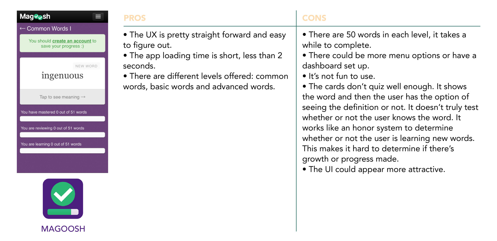

Wanderwords
travel and learning
No 1 Overview
WanderWords is a language app that helps users in a pinch when they travel to foreign destinations. Users can look up basic phrases or words while they’re on go. The app provides translations and pronunciations to help users assimilate into the local culture.
No 2 Problem Statement
Users need a way to learn the basics of a foreign language easily and quickly to adapt to local customs. By knowing simple phrases, users can interact with locals in a more meaningful way.
No 3 Hypothesis
By creating a language software application that has a flash card feature, a breakdown of foreign words into English structures, pnemonics and cognates, a translator search feature for basic words and phrases for users, we will help them build the confidence and knowledge they need to be immersed in the local culture. As a result, users will have no trouble getting around and doing simple daily activities and will be interacting with locals in no time.
No 4Competitive Analysis
A competitive analysis was performed in order to gain a better understanding of current learning apps, what they offer and what they are lacking. This process allowed me to recognize opportunities to meet user needs that are being neglected in the current market.
No 5User Research Analysis
Interviews were held to accomplish the following goals:
- Observe user behavior toward learning a new language
- What challenges do users face when learning a new language
- What methods do users take in learning a new language
- Positive and negative experiences in learning a new language
- What learning methods do users prefer
INSIGHTS BASED ON AFFINITY MAPPING
- Users spend an average of 30 minutes a day learning a new language.
- Users who live abroad are more likely to commit to learning the local language.
- Users lose motivation for learning after a few months.
- Users who live abroad tend to seek assimilation toward the local culture.
- Users learn better through visual cues, pnemonics and practicing pronunciation.
- Users wanted to learn practical words that would be used for every day basic needs.
- A reminder would help users continue the habit of learning a new language.
No 6 User Personas
Personas were created to maintain a user-centered design. After conducting interviews and analyzing the data, I was able to pinpoint the behaviors, needs and pain points of my target audience.
No 7 User Journeys
User journeys were created to visualize the emotional highs and lows a user would experience while achieving their goal.
No 8 User Flows
User flows were created to visualize the overall path a user would take through the app to accomplish a goal.
No 9 Wireframes
Low Fidelity Wireframes
During the initial stages of designing, sketching was essential for quick iterations of ideas and experimentation.

Mid Fidelity Wireframes
The sketches were refined with more detail in Balsamiq.
No 10 Usability Testing
Usability tests were conducted with three participants, two were moderated remotely and one was done in person at the participant’s home. The participants were in the age range of 24 - 28. The sessions ran for roughly 15 minutes. For the remote tests, I used my MacBook Pro and communicated through Skype. I recorded the session through Quicktime Player’s screen record feature. For the test done in person, we used an iPhone 6s plus and I used my iPhone 6s to record the session. Affinity mapping was utilized to analyze the test results.
GOAL
The purpose of this study is to access the ease of use within the app. I would like to observe if users can successfully log in, search for translations in different categories and navigate around the application. The goal is to ensure the overall usefulness and whether the design needs improvement or not.
TEST OBJECTIVE
CONCLUSION
Overall users had no issues navigating through each category and looking up translations. However, they were confused at the onboarding screens. It wasn’t clear that it was a tutorial and not a home screen. The layout needs to be reevaluated, search bars, go back/X buttons and the type of categories need to be explored further.
TEST REPORT
All participants were able to complete the task in each scenario. A few issues came about during the test. They are highlighted below.
Issue 1: Participants were confused at onboarding screens, they thought it was the dashboard, they didn’t know it was a tutorial. (High severity)
Suggested Change: Modify onboarding screens, make it more visually different from the home screen or modify ‘let’s go’ screen so the user knows they‘re entering a tutorial.
Evidence: Nearly all the users clicked around on onboarding screens until I explained to them it wasn’t a home screen.
Issue 2: The language setting is easy to find but can be confused with info button instead of user/profile button. Users didn’t like that there wasn’t a way to go back to language selection when setting up their account. (Major severity)
Suggested Change: Create a separate button for changing language settings for quicker access.
Evidence: Users took a while to figure out language setting.
Issue 3: Search bar might be redundant on the home screen and category screen. (Minor severity)
Suggested Change: Reevaluate the types of categories on the app. Narrow down to one search bar so it’s less redundant, possibly remove alphabet category.
Evidence: User had no issue navigating in food category but found it superfluous.
Issue 4: A few users didn’t like the X button or the lack of a go back button, it created confusion. (Minor severity)
Suggested Change: Add go back buttons and remove X buttons.
Evidence: Users mentioned a preference to a go back button.